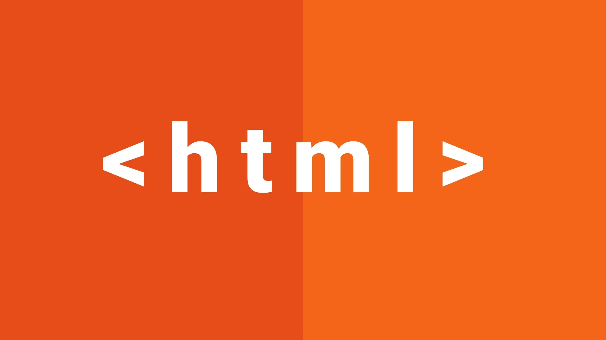
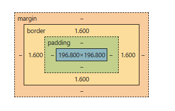
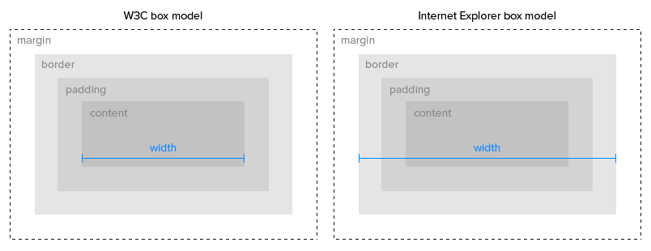
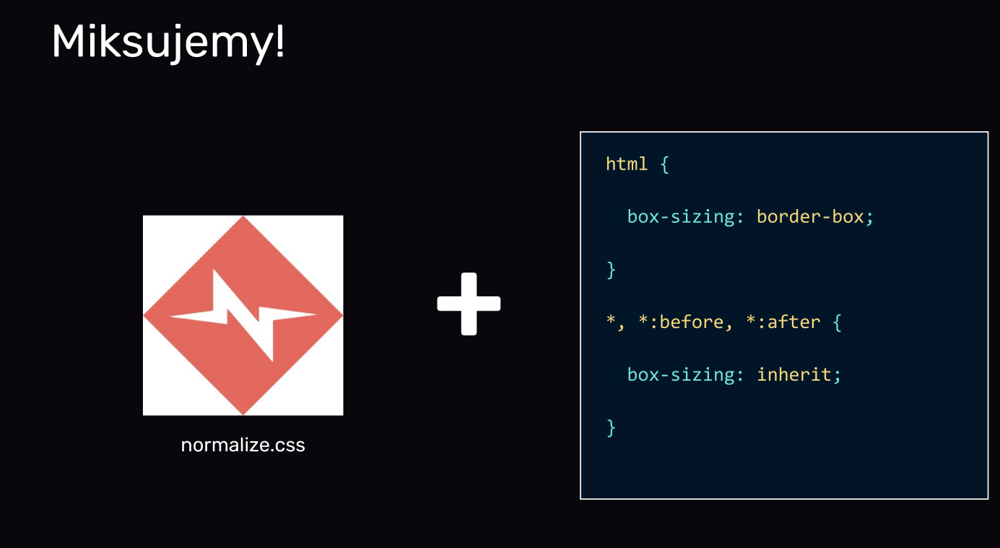

Nazywam się Dawid Kumor i od ponad dekady pracuję w branży technicznej, rozwijając swoje umiejętności w
automatyce i robotyce. Urodziłem się w 1993 roku w Bielsku-Białej, gdzie mieszkam do dziś. Zawodowo
zajmuję się technologią produkcji, programowaniem oraz projektowaniem rozwiązań technicznych.
Moja droga zawodowa
Przez lata pracowałem w różnych firmach, gdzie zdobywałem doświadczenie w obsłudze maszyn CNC,
programowaniu sterowników PLC oraz projektowaniu w programach CAD. Ostatnio byłem zatrudniony w
firmie Wech jako technolog, gdzie zajmowałem się kontaktem z klientami, tworzeniem dokumentacji
technicznej i współpracą przy projektach inżynieryjnych. Wcześniej pracowałem w AVIO Polska przy
obsłudze precyzyjnych szlifierek, w AGAMON jako elektronik-automatyk oraz w NEMAK POLAND w dziale
gromadzenia danych.
Te doświadczenia nauczyły mnie praktycznego podejścia do rozwiązywania problemów technicznych oraz
pracy w zespole. Każde miejsce pracy dało mi coś innego - od umiejętności diagnostycznych, przez
znajomość procesów produkcyjnych, po doświadczenie w projektowaniu.
Wykształcenie i umiejętności
Ukończyłem studia licencjackie na Akademii Techniczno-Humanistycznej w Bielsku-Białej na kierunku
Automatyka i Robotyka. Podczas studiów specjalizowałem się w projektowaniu zrobotyzowanych
stanowisk
pracy, co łączy się z moimi zawodowymi zainteresowaniami.
Pracuję z różnymi programami - od AutoCAD-a i SolidWorks-a, przez systemy programowania PLC jak GE
Proficy czy TIA Portal, po oprogramowanie do analizy jakości. Znam metodyki ISO 9001 oraz narzędzia
analityczne używane w przemyśle. Komunikuję się po angielsku na poziomie B2, a ostatnio uczę się
koreańskiego dla przyjemności.
Poza pracą wolonturiuję w lokalnym schronisku dla zwierząt. Lubię czytać książki, oglądam filmy i
interesuję się kulturą antyczną. Jeżdżę na rowerze szosowym i zimą próbuję swoich sił na
nartach.
Ważne są dla mnie wartości równości i tolerancji - angażuję się w działania na rzecz społeczności
LGBTQIA+ i współorganizuję marsze równości w Bielsku-Białej.
Staram się łączyć zainteresowania techniczne z humanistycznymi - uważam, że różnorodność perspektyw
pomaga w lepszym rozumieniu świata i znajdowaniu ciekawszych rozwiązań, zarówno w pracy, jak i w
życiu.
Notatki z lekcji
HTML

HTML (HyperText Markup Language) to język znaczników używany do tworzenia stron
internetowych.
Znaczniki HTML
definiują strukturę treści na stronie, np. nagłówki, paragrafy, linki, obrazy itp.
main - element główny dokumentu HTML
section - sekcja lub rozdział w dokumencie
article - samodzielna część treści, np. wpis na blogu
header - nagłówek sekcji lub dokumentu
h1, h2, h3 - nagłówki o różnych poziomach ważności
p - paragraf tekstu
footer - stopka dokumentu lub sekcji
br - łamanie linii
b - pogrubienie tekstu
i - kursywa tekstu
u - podkreślenie tekstu
strong - wyróżnienie ważnego tekstu
em - wyróżnienie tekstu (np. kursywa) może oznaczać ironie
b i i i u nie mają znaczenia semantycznego. Tylko wyróżnianie fragmentu tekstu. Tego już nie
robimy. Robimy to w stylach.
strong i em mają znaczenie semantyczne
a - link do innej strony lub miejsca w tej samej stronie
img - wstawienie obrazu
id - identyfikator elementu
class - klasa elementu
nav - element zawierający nawigację
div - element ogólnego przeznaczenia do grupowania innych elementów
W3C - specyfikacja HTML,
validator.w3.org - narzędzie do sprawdzania poprawności kodu HTML
MDN Web Docs - dokumentacja i zasoby dla programistów webowych
CSS (Cascading Style Sheets) to język stylów używany do opisywania wyglądu i formatowania dokumentów
HTML.
CSS pozwala na oddzielenie treści od prezentacji, umożliwiając kontrolę nad kolorami, czcionkami,
układem i
innymi aspektami wizualnymi strony.
składnia selektora "{
właściwość: wartość;
}"
Typy selektorów:
Selektory elementów (np. p, h1)
Selektory klas (np. .nazwa-klasy)
Selektory identyfikatorów (np. #nazwa-id)
Selektory atrybutów (np. [type="text"])
#id - selektor identyfikatora
.class - selektor klasy
element - selektor elementu
Właściwości CSS:
color - kolor tekstu
background-color - kolor tła
font-size - rozmiar czcionki
margin - marginesy zewnętrzne
padding - odstępy wewnętrzne
border - obramowanie
CSS display
display: block - element blokowy
display: inline - element liniowy
display: inline-block - element liniowy z możliwością ustawiania szerokości i wysokości
width - szerokość elementu
height - wysokość elementu
box-sizing: content-box - domyślny model pudełkowy (szerokość i wysokość dotyczą tylko
zawartości)
box-sizing: border-box - szerokość i wysokość obejmują zawartość, padding i border
max-width - maksymalna szerokość elementu
max-height - maksymalna wysokość elementu
min-width - minimalna szerokość elementu
min-height - minimalna wysokość elementu
overflow: visible - zawartość wychodzi poza element
overflow: hidden - zawartość jest przycinana
overflow: scroll - pojawiają się paski przewijania
overflow: auto - paski przewijania pojawiają się tylko wtedy, gdy są potrzebne
overflow: clip - przycinanie zawartości do obszaru elementu
CSS jednostki
px - piksele (stała jednostka)
em - jednostka względna względem rozmiaru czcionki rodzica
rem - jednostka względna względem rozmiaru czcionki elementu root (html)
% - procenty względem elementu rodzica
vh - procent wysokości widoku przeglądarki (1vh = 1% wysokości widoku)
vw - procent szerokości widoku przeglądarki (1vw = 1% szerokości widoku)
CSS Box Model
Model pudełkowy CSS opisuje sposób, w jaki przeglądarka renderuje elementy na stronie. Składa się
z czterech głównych części:
Content (zawartość) - obszar, w którym znajduje się treść elementu (tekst, obraz itp.)
Padding (wypełnienie) - przestrzeń między zawartością a obramowaniem elementu
Border (obramowanie) - linia otaczająca element
Margin (margines) - przestrzeń między obramowaniem elementu a innymi elementami na stronie

Źródło: MDN Web Docs - CSS Box Model
Padding
Padding to przestrzeń między zawartością elementu a jego obramowaniem. Można ustawić padding
dla wszystkich stron elementu lub osobno dla każdej strony (padding-top, padding-right,
padding-bottom, padding-left).
Border
Border to linia otaczająca element. Można ustawić styl, szerokość i kolor obramowania (np. border:
1px solid black;
border-top: 2px dashed red;)
Border style: none, solid, dashed, dotted, double, groove, ridge, inset, outset
Border-radius: zaokrąglenie rogów elementu (np. border-radius: 10px; border-radius: 50%;)
Margin
Margin to przestrzeń między obramowaniem elementu a innymi elementami na stronie. Można ustawić
margin dla wszystkich stron elementu lub osobno dla każdej strony (margin-top, margin-right,
margin-bottom, margin-left).
margin auto - automatyczne wyrównanie elementu (np. margin: 0 auto; - centrowanie elementu poziomo)
CSS box-sizing
Właściwość box-sizing określa, jak przeglądarka oblicza całkowitą szerokość i wysokość elementu.
Istnieją dwa główne tryby:
content-box (domyślny) - szerokość i wysokość dotyczą tylko zawartości elementu. Padding i
border są dodawane do tych wartości, co może prowadzić do większych rozmiarów elementu niż
oczekiwano.
border-box - szerokość i wysokość obejmują zawartość, padding i border. Oznacza to, że jeśli
ustawisz szerokość na 100px, to całkowita szerokość elementu pozostanie 100px, niezależnie
od wartości padding i border.
deklaracja box-sizing: border-box jest często używana, ponieważ ułatwia kontrolę nad rozmiarami
elementów i
zapobiega nieoczekiwanym rozmiarom spowodowanym przez padding i border.

Źródło: MDN Web Docs - CSS box-sizing
position
Właściwość position określa, jak element jest pozycjonowany na stronie. Istnieją cztery główne
wartości:
static (domyślna) - element jest pozycjonowany zgodnie z normalnym przepływem dokumentu
relative - element jest pozycjonowany względem swojej normalnej pozycji. Można użyć właściwości
top, right, bottom, left do przesunięcia elementu względem jego normalnej pozycji
absolute - element jest pozycjonowany względem najbliższego przodka o pozycji relative lub
absolute. Jeśli nie ma takiego przodka, element jest pozycjonowany względem okna przeglądarki
fixed - element jest pozycjonowany względem okna przeglądarki i pozostaje w tej samej pozycji
nawet podczas przewijania strony
sticky - element jest pozycjonowany względnie do swojego normalnego położenia, ale staje się fixed,
gdy osiąga określony punkt podczas przewijania strony
float - element jest pozycjonowany na lewo lub prawo, a tekst i inne elementy opływają go. Teraz
raczej się nie używa ale dobry do obrazków.
clear - właściwość używana w połączeniu z float, aby zapobiec opływaniu elementów (np. clear: both;
clear: left; clear: right;)
przesuwanie elementów absolute:
top - przesuwa element w dół
right - przesuwa element w lewo
bottom - przesuwa element w górę
left - przesuwa element w prawo
z-index
Właściwość z-index określa kolejność nakładania się elementów pozycjonowanych (relative, absolute,
fixed). Elementy z wyższym z-index będą wyświetlane nad elementami z niższym z-index. Domyślna
wartość z-index to 0.
Źródła:
CSS-Tricks - poradniki i artykuły o CSS
MDN Web Docs - dokumentacja i zasoby dla programistów webowych
JavaScript
JavaScript to język programowania używany do tworzenia interaktywnych elementów na stronach
internetowych. Pozwala na manipulowanie strukturą HTML i stylami CSS w czasie rzeczywistym, co
umożliwia dynamiczne zmiany na stronie bez konieczności jej przeładowywania.
Podstawowe elementy JavaScript:
Zmienne - przechowują dane (var, let, const)
stałe - przechowują niezmienne dane (const)
Operatory - symbole do wykonywania operacji matematycznych i logicznych (+, -, *, /, %, ==, ===, !=,
!==, <,>, <=,>=)
Funkcje - bloki kodu wykonujące określone zadania
Instrukcje warunkowe - if, else, switch
Pętle - for, while, do...while, for ...of, for ...in
Tablice - struktury danych przechowujące listy wartości
Obiekty - struktury danych przechowujące właściwości i metody
wartości logiczne - true, false
literały - liczby, stringi
Zmiennie w JavaScript
Zmienne w JavaScript służą do przechowywania danych. Można je deklarować za pomocą słów kluczowych
var,
let lub const. Różnice między nimi:
var - zmienna o zasięgu funkcji, może być redeklarowana i hoistowana
let - zmienna o zasięgu bloku, nie może być redeklarowana, ale jest hoistowana (nie można jej
użyć przed deklaracją)
const - stała o zasięgu bloku, nie może być redeklarowana ani przypisana ponownie, ale jest
hoistowana (nie można jej użyć przed deklaracją)
Rodzaje danych:
number - liczby (np. 42, 3.14)
bigint - duże liczby całkowite (np. 9007199254740991n)
string - tekst (np. "Hello, world!")
boolean - wartości logiczne (true, false)
null - brak wartości
undefined - niezdefiniowana wartość
symbol - unikalne identyfikatory
object - struktury danych przechowujące właściwości i metody (np. {name: "Alice", age: 30})
type of - operator zwracający typ danych (np. typeof 42 // "number", typeof "Hello"
// "string")
GIT i GitHub
Git to system kontroli wersji, który pozwala śledzić zmiany w plikach i zarządzać projektem. GitHub
to platforma oparta na Git, umożliwiająca współpracę nad projektami oraz hostowanie repozytoriów.
Podstawowe polecenia Git:
git init - inicjalizacja repozytorium
git add - dodanie plików do staging area
git commit - zatwierdzenie zmian
git push - przesłanie zmian na serwer
git pull - pobranie zmian z serwera
GitHub:
https://github.com/ - strona główna GitHub
https://docs.github.com/ - dokumentacja GitHub
Nazywanie rzeczy
Nazywamy bez polskich znaków i spacji
Angielskie słowa
Trzymamy się jednego schematu
Konwencje nazewnictwa
camelCase - pierwsze słowo małą literą, kolejne z dużej (np. mojaZmienna)
PascalCase - każde słowo z dużej litery (np. MojaZmienna)
snake_case - słowa oddzielone podkreśleniami (np. moja_zmienna)
kebab-case - słowa oddzielone myślnikami (np. moja-zmienna)
Jak działa internet i przeglądrka
Przeglądarka internetowa to oprogramowanie służące do wyświetlania stron internetowych. Pobiera
pliki z serwera za pomocą protokołu HTTP/HTTPS i renderuje je na ekranie użytkownika.
Podstawowe elementy działania internetu:
Serwer - komputer przechowujący pliki stron internetowych
Klient - przeglądarka użytkownika
Protokół HTTP/HTTPS - zasady komunikacji między klientem a serwerem
DNS - system tłumaczący nazwy domen na adresy IP
Z czego składa się URL
URL (Uniform Resource Locator) to adres internetowy składający się z kilku części:
Protokół - np. http:// lub https://
Domenna - nazwa strony, np. www.przyklad.com
Ścieżka - lokalizacja zasobu na serwerze, np. /katalog/plik.html
Parametry - dodatkowe informacje przekazywane do serwera, np. ?id=123
Fragment - odwołanie do konkretnej sekcji na stronie, np. #sekcja1
/ - root katalog
Przykład pełnego URL: https://www.przyklad.com/katalog/plik.html?id=123#sekcja1
Jak działa przeglądarka internetowa
Przeglądarka internetowa działa w kilku etapach:
1. Wpisuje się adres URL w pasek adresu.
2. Przeglądarka szykad adres IP serwera za pomocą DNS.
3. Przeglądarka wysyła żądanie do serwera za pomocą protokołu HTTP/HTTPS.
4. Serwer odpowiada, przesyłając pliki HTML, CSS i JavaScript.
5. Przeglądarka analizuje kod HTML i CSS, a następnie renderuje stronę na ekranie użytkownika.
Kody odpowiedzi HTTP
Kody odpowiedzi HTTP są trzycyfrowymi kodami, które serwer wysyła do przeglądarki w celu informowania
o stanie zapytania:
1XX - Informational - informacja o przetwarzaniu zapytania
200 - OK - zapytanie zakończone sukcesem
30X - Redirection - przekierowanie do innego zasobu
400 - Bad Request - błędne zapytanie
401 - Unauthorized - brak autoryzacji
403 - Forbidden - dostęp zabroniony
404 - Not Found - strona nie została znaleziona
50X - Internal Server Error - błąd wewnętrzny serwera
Czym jest root? Ścieżki względne i bezwzględne
Root (główny katalog) to katalog główny systemu plików. W kontekście internetu, root to katalog
główny serwera WWW.
Ścieżki bezwzględne zaczynają się od znaku "/", np. /katalog/plik.html.
Ścieżki względne są względem bieżącego katalogu, np. katalog/plik.html.
Terminal linuksowy
Terminal to interfejs tekstowy do komunikacji z systemem operacyjnym. W systemach Linux i macOS można
go otworzyć za pomocą skrótu Ctrl+Alt+T.
Podstawowe komendy terminala
ls - lista plików i katalogów w bieżącym katalogu
cd - zmiana katalogu (np. cd katalog cd .. katalog wyżej, cd ~ katalog domowy)
pwd - pokazuje aktualny katalog roboczy
mkdir - tworzy nowy katalog (np. mkdir nowy_katalog)
touch - tworzy nowy plik (np. touch nowy_plik.txt)
rm - usuwa plik lub katalog (np. rm plik.txt)
cp - kopiuje plik lub katalog (np. cp plik.txt kopia_plik.txt)
mv - przenosi lub zmienia nazwę pliku lub katalogu (np. mv stara_nazwa.txt nowa_nazwa.txt)
cat - wyświetla zawartość pliku (np. cat plik.txt)
nano - edytor tekstu w terminalu (np. nano plik.txt)
clear - czyści ekran terminala
code . - otwiera edytor kodu VS Code w bieżącym katalogu
Normalizacja vs reset
Normalizacja i reset to techniki stosowane w CSS w celu zapewnienia spójności wyglądu stron
internetowych
na różnych przeglądarkach. Normalizacja (normalize.css) to zbiór reguł CSS, które mają na celu
ujednolicenie domyślnych stylów przeglądarek, zachowując jednocześnie pewne różnice. Reset CSS to
bardziej drastyczne podejście, które usuwa wszystkie domyślne style przeglądarek, co może prowadzić
do
konieczności ponownego definiowania wielu stylów od podstaw.
normalize.css
normalize.css to popularna biblioteka CSS, która ma na celu ujednolicenie domyślnych stylów
przeglądarek, zachowując jednocześnie pewne różnice. Normalizacja jest mniej drastyczna niż reset,
ponieważ nie usuwa wszystkich domyślnych stylów, ale raczej je dostosowuje, aby były bardziej
spójne między przeglądarkami. Normalize.css jest często używany jako baza dla projektów webowych,
ponieważ pozwala na zachowanie pewnych domyślnych stylów, które mogą być przydatne, jednocześnie
eliminując różnice między przeglądarkami.
Normalize.css jest bardziej popularny niż reset.css, ponieważ pozwala na zachowanie pewnych
domyślnych stylów, które mogą być przydatne, jednocześnie eliminując różnice między przeglądarkami,
co może prowadzić do mniejszej ilości kodu CSS, który trzeba napisać, aby osiągnąć pożądany wygląd
strony.Normalizacja CSS

Źródło: MDN Web Docs - normalize.css
reset.css
Reset CSS to technika, która usuwa wszystkie domyślne style przeglądarek, co może prowadzić do
konieczności ponownego definiowania wielu stylów od podstaw. Reset CSS jest bardziej drastyczny niż
normalizacja, ponieważ całkowicie usuwa domyślne style, co może być czasochłonne i wymagać więcej
pracy, aby osiągnąć pożądany wygląd strony. Reset CSS jest mniej popularny niż normalize.css,
ponieważ może prowadzić do większej ilości kodu CSS, który trzeba napisać, aby przywrócić podstawowe
style, takie jak marginesy, paddingi czy czcionki.